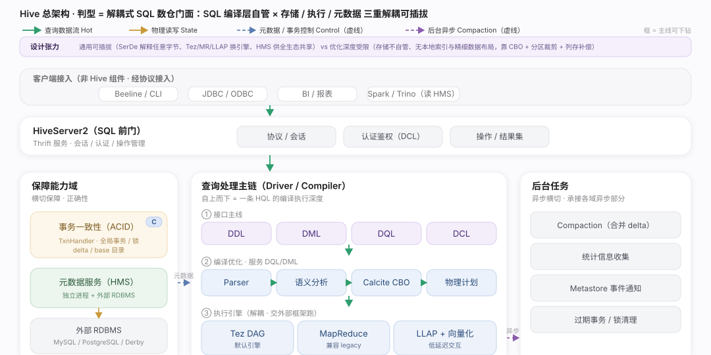
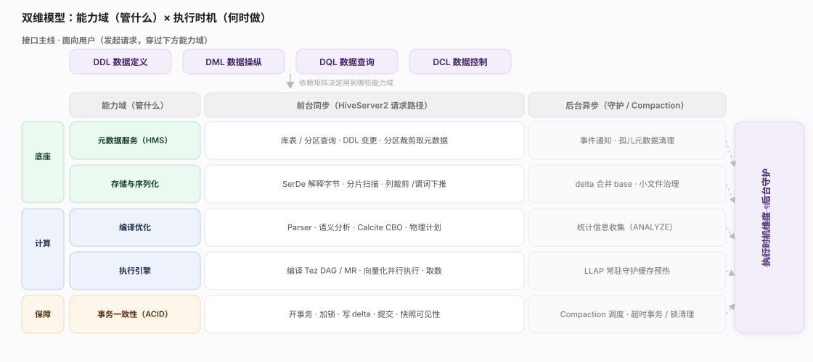
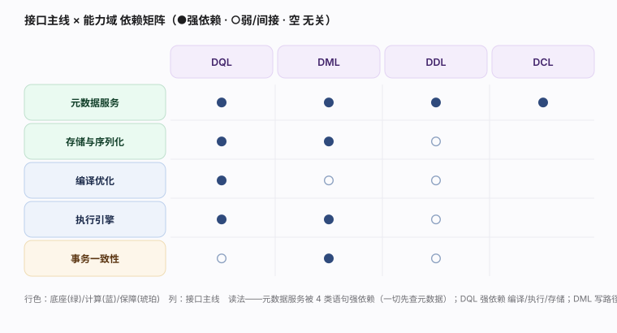
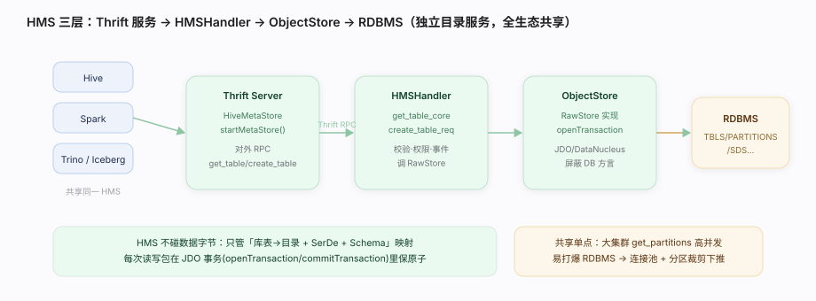
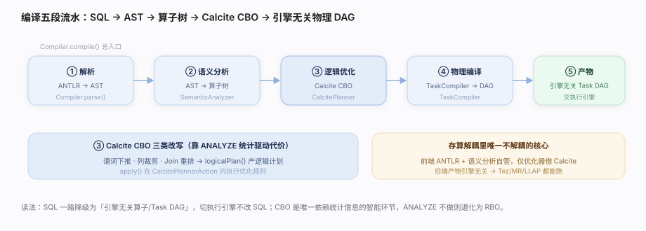
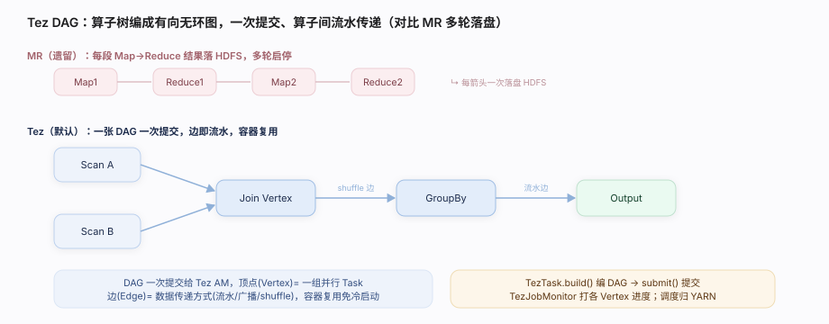
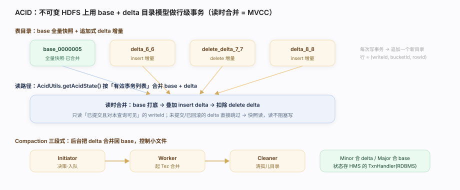

Apache Hive · 核心原理图谱
解耦式 SQL-on-Hadoop 数仓门面:SQL 编译优化层自管,存储(SerDe/StorageHandler)/执行(Tez/MR/LLAP)/元数据(HMS)三重解耦可插拔。






SerDe（行 ⇄ 字节）、InputFormat/OutputFormat（切分 + 读写文件）、StorageHandler（把非 HDFS 存储系统整体接进来）。这层解耦让 Hive 能同时吞下 TextFile、ORC、Parquet，乃至 HBase、Iceberg、Kafka。